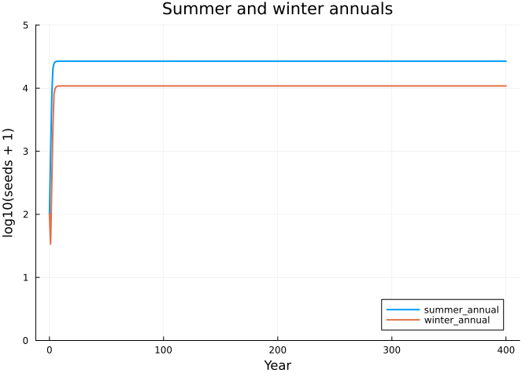
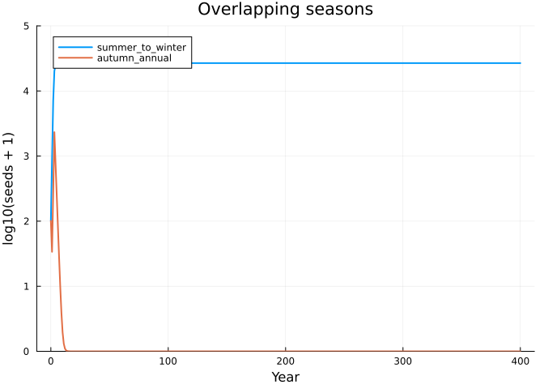
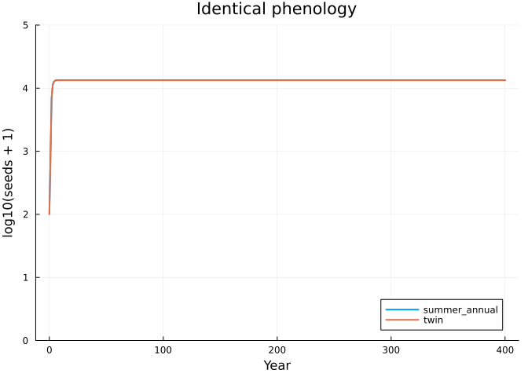
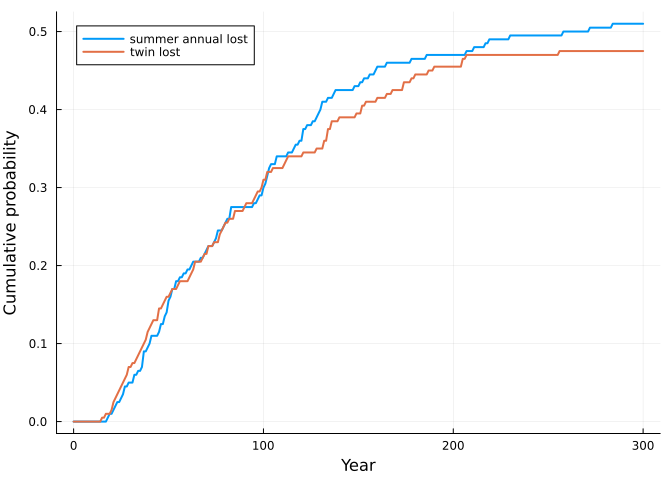

Seasons: phenology, coexistence and drift
Simon Frost
- Seasons are environments
- Annual plants competing for space by lottery
- The same growth rate when alone
- Three pairs, three outcomes
- Drift
- Reference
ENV["GKSwstype"] = "100"
using MatrixCommunityModels
using LinearAlgebra, Plots, RandomSeasons are environments
The published matrix community models take one step per year. Nothing in the composition requires that: the environment of a step can be a season, and a year is then a cycle of steps. This vignette uses four seasons (1 spring, 2 summer, 3 autumn, 4 winter) to ask a question an annual model cannot: how does the timing of germination and seed set decide who shares a habitat?
Annual plants competing for space by lottery
Each species is an annual with a seed bank. In its germination season half of its seeds try to germinate; in its seeding season each plant produces 20 seeds and dies. A spring flood kills 90% of standing plants.
Space is limited within a season, so two pools are needed. space is the area held by plants. demand is the number of seeds trying to germinate this season, across all species. If demand exceeds the free space, each germinating seed establishes with probability free space / demand: a lottery in which every seed has the same chance.
function annual(name; germinate, seed, K = 1000.0, flood = 1, seeds_per_plant = 20.0, g = 0.5)
life = ValuedProjectionNet([:seed, :plant],
:dormancy => [(:seed => :seed) => 0.9],
:germination => [(:seed => :plant) => g],
:growth => [(:plant => :plant) => 0.9],
:seed_set => [(:plant => :seed) => seeds_per_plant])
during(season) = ctx -> ctx.env == season ? 1.0 : 0.0
establishment(ctx) = min(1.0, max(K - ctx.pool.space, 0.0) / max(ctx.pool.demand, 1e-12))
plant = respond(life,
:dormancy => ctx -> ctx.env == germinate ? 1 - g : 1.0, # germinating seeds leave the seed bank
:germination => during(germinate), :germination => establishment, # the lottery for free space
:seed_set => during(seed),
:growth => ctx -> ctx.env == seed ? 0.0 : (ctx.env == flood ? 0.1 / 0.9 : 1.0)) # plants die after seeding; floods kill
species(name, births(plant, :seed_set);
occupies = [:space => [:plant => 1.0], :demand => (n, env) -> env == germinate ? g * n[:seed] : 0.0])
end
seasons = [1, 2, 3, 4]
envs = repeat(seasons, 400) # 400 years1600-element Vector{Int64}:
1
2
3
4
1
2
3
4
1
2
⋮
4
1
2
3
4
1
2
3
4The same growth rate when alone
periodic_matrix multiplies a species’ seasonal matrices over one cycle with the pools held fixed. With the habitat empty, its dominant eigenvalue is the annual growth rate of the species when rare. A summer annual (germinates in summer, seeds in autumn) and a winter annual (germinates in winter, seeds in spring) have different seasonal matrices but the same annual growth rate here:
summer = annual(:summer_annual; germinate = 2, seed = 3)
winter = annual(:winter_annual; germinate = 4, seed = 1)
empty = (space = 0.0, demand = 0.0)
annual_rate(sp) = maximum(abs, eigvals(periodic_matrix(sp, empty, seasons)))
annual_rate(summer), annual_rate(winter)(8.42805, 8.428049999999999)Three pairs, three outcomes
The function below composes a pair, projects it for 400 years, and computes each species’ annual invasion rate into the other.
function compete(a, b)
sol = project(community(a, b), [100.0, 0.0, 100.0, 0.0], envs)
rate(x, y) = stochastic_invasion_rate(x, y, [100.0, 0.0], envs; burnin = 800)^4
(sol = sol, invasion = (rate(a, b), rate(b, a)))
end
seedbank(sol, sp) = sol[sp][1:4:end, 1] # seeds at the start of each year
function show_pair(a, b, title)
r = compete(a, b)
println(title, ": annual invasion rates ", round.(r.invasion; digits = 3))
plot(0:400, log10.([seedbank(r.sol, only(species_names(a))) seedbank(r.sol, only(species_names(b)))] .+ 1);
label = [String(only(species_names(a))) String(only(species_names(b)))], xlabel = "Year", ylabel = "log10(seeds + 1)",
title = title, lw = 2, ylims = (0, 5))
endshow_pair (generic function with 1 method)Complementary timing. The summer annual holds space from summer to autumn, the winter annual from winter to spring. Each can invade the other and they coexist.
show_pair(summer, winter, "Summer and winter annuals")Summer and winter annuals: annual invasion rates (8.428, 8.428)
Overlapping timing. A species that germinates in autumn, while the summer-germinating species still holds the space, cannot establish:
late_summer = annual(:summer_to_winter; germinate = 2, seed = 4)
autumn = annual(:autumn_annual; germinate = 3, seed = 1)
show_pair(late_summer, autumn, "Overlapping seasons")Overlapping seasons: annual invasion rates (8.428, 0.328)
Identical timing. Two species with the same phenology draw from the same lottery. Each has an invasion rate of exactly one: neither is excluded and neither can increase. The deterministic model keeps them at their starting ratio for ever.
twin = annual(:twin; germinate = 2, seed = 3)
show_pair(summer, twin, "Identical phenology")Identical phenology: annual invasion rates (1.0, 1.0)
None of the three outcomes was specified. The species have the same vital rates and the same growth rate alone; only the season in which they use the shared space differs.
Drift
An invasion rate of exactly one means the deterministic model has nothing to say about which of two identical species persists. With whole individuals it is settled by chance. ensemble runs replicate projections with demographic stochasticity, here in a small habitat of 30 units of space.
small(name; kw...) = annual(name; K = 30.0, kw...)
pair = community(small(:summer_annual; germinate = 2, seed = 3), small(:twin; germinate = 2, seed = 3))
ens = ensemble(pair, [20.0, 0.0, 20.0, 0.0], repeat(seasons, 300); replicates = 200, rng = Xoshiro(1))CommunityEnsemble(200 replicates, 1200 steps, 4 states)years = ens.t[1:4:end] ./ 4
plot(years, [quasi_extinction(ens, :summer_annual)[1:4:end] quasi_extinction(ens, :twin)[1:4:end]];
label = ["summer annual lost" "twin lost"], xlabel = "Year", ylabel = "Cumulative probability", lw = 2,
legend = :topleft)
final(sp) = abundance(ens, sp)[:, end]
(summer_annual_lost = count(==(0), final(:summer_annual)), twin_lost = count(==(0), final(:twin)),
both_present = count((final(:summer_annual) .> 0) .& (final(:twin) .> 0)), replicates = 200)(summer_annual_lost = 102, twin_lost = 95, both_present = 3, replicates = 200)The same ensemble for the complementary pair, in the same small habitat:
pair2 = community(small(:summer_annual; germinate = 2, seed = 3), small(:winter_annual; germinate = 4, seed = 1))
ens2 = ensemble(pair2, [20.0, 0.0, 20.0, 0.0], repeat(seasons, 300); replicates = 200, rng = Xoshiro(1))
final2(sp) = abundance(ens2, sp)[:, end]
(summer_annual_lost = count(==(0), final2(:summer_annual)), winter_annual_lost = count(==(0), final2(:winter_annual)),
both_present = count((final2(:summer_annual) .> 0) .& (final2(:winter_annual) .> 0)), replicates = 200)(summer_annual_lost = 0, winter_annual_lost = 0, both_present = 200, replicates = 200)With identical phenology one of the two species is lost in nearly every replicate within 300 years, each about equally often. With complementary phenology both are still present in every replicate: each species recovers from low numbers because it can invade, which is what an invasion rate above one means.
Reference
Lytle, D. A. & Tonkin, J. D. (2023). Matrix community models for ecology and evolution. npj Biodiversity 2, 26.